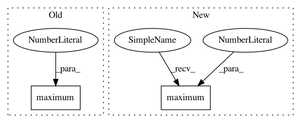

30e5ed0c71d07684d5bb2436f8adb55f290cc537,keras_frcnn/roi_helpers.py,,non_max_suppression_fast,#,152
Before Change
hh_un = yy2_un - yy1_un
ww_un = np.maximum(0, ww_un)
hh_un = np.maximum(0, hh_un)
// compute the ratio of overlap
overlap = (ww_int*hh_int)/(ww_un*hh_un + 1e-9)
After Change
// compute the width and height of the bounding box
ww_int = np.maximum(0, xx2_int - xx1_int)
hh_int = np.maximum(0, yy2_int - yy1_int)
ww_un = np.maximum(0, xx2_un - xx1_un)
hh_un = np.maximum(0, yy2_un - yy1_un)
In pattern: SUPERPATTERN
Frequency: 3
Non-data size: 2
Instances
Project Name: kbardool/keras-frcnn
Commit Name: 30e5ed0c71d07684d5bb2436f8adb55f290cc537
Time: 2017-05-31
Author: thomas.bm.janssens@gmail.com
File Name: keras_frcnn/roi_helpers.py
Class Name:
Method Name: non_max_suppression_fast
Project Name: kbardool/keras-frcnn
Commit Name: e5c463c054fcc10b4d85a51bdef04b3a2bb1ccc7
Time: 2017-05-30
Author: thomas.bm.janssens@gmail.com
File Name: keras_frcnn/roi_helpers.py
Class Name:
Method Name: non_max_suppression_fast
Project Name: librosa/librosa
Commit Name: c7f74b5f1a258a0881612dd55446b6d5fce10590
Time: 2012-11-07
Author: brm2132@columbia.edu
File Name: librosa/beat.py
Class Name:
Method Name: _beat_strength